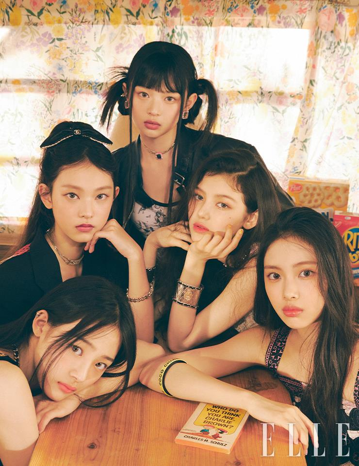

2022년 7월 22일에 데뷔한 ADOR 소속의 5인조 다국적 걸그룹이다. 대중음악은 일상과 초근접해 있는 문화이기 때문에 마치 매일 입는 옷과 같다.특히 진(Jean)은 시대를 불문해 남녀노소 모두에게 사랑받아 온 아이템이다.뉴진스(NewJeans)에는 매일 찾게 되고 언제 입어도 질리지 않는 진처럼 시대의 아이콘이 되겠다는 포부와New Genes가 되겠다는 각오가 담겨 있다. 